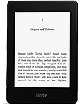

How to download and install the e-books
I have just finished a second release of the ministry of the recovery and Hymns and Spiritual Songs (1962) [English, Deutsche & Dutch... Italiano in progress] for e-readers. Please use the links on this page to buy your Kindle, as this generates a little revenue that helps pay for the hosting for this site!
There are two formats available, supporting all the most common reader devices:
- EPUB Suitable for many readers, including Apple's iBooks which works a treat on iPad, iPhone and iPod Touch [ Ministry | Hymns ]
- MOBI Specifically for the Amazon Kindle, although it will work on many other devices too [ Ministry | Hymns ]
Don't have a reader and don't know which one to get? Here's a comparison of the iPad with the Kindle 3.
If you're regularly travelling or commuting and want to read the ministry on the move, I recommend the Kindle. Buy one direct from Amazon UK or Amazon US.
There are currently four Kindles to consider; I would recommend the Kindle Paperwhite Wi-fi (£109) and here's why:
| Model | Price | Screen | Comments |
|---|---|---|---|
| Kindle Paperwhite Wi-fi | £109 | Backlit e-ink | Great all-rounder. Light, compact, fast and it even reads to you! If you want to buy a book from Amazon, you need to be connected to Wi-fi (eg in your hotel room). If you are mainly using it for the ministry that will be perfect - this is the one for you. |
| Kindle Paperwhite 3G | £169 | Backlit e-ink | The 3G element is a bit like a mobile phone, so the Touch 3G is heavier and more expensive. If you think you're likely to want to buy a book in the doctor's surgery or on a beach, maybe you should consider this. If not, get the Wi-fi. |
| Kindle Fire | £129 | Colour | Tablet, more like an iPad. It also reads books but the screen doesn't work as well in bright daylight. The Fire is for people who want apps and games, and I would recommend the Fire HD for the extra £30 because of the 1280x800 HD display. |
| Kindle Fire HD | £159 | Colour |
If you'd like to read more, or investigate for yourself, start by reading about EPUB-compatible e-readers.
So you've bought a reader and want to read the ministry on it?
Easy! Follow the simple steps below!
Amazon Kindle
- Download the MOBI format ministry (now available MOBI format Hymns too!)
- Unzip the file on your Desktop (either Mac or PC) - it should create a single "ministry" folder with subfolders for servants
- Attach your Kindle via the supplied USB cable
- Drag the ministry folder that you created and drop it onto the documents folder on Kindle drive or device (the ministry has to sit underneath the documents folder)
- Wait for the files to copy, then disconnect the Kindle
- When it powers up, you should see all the ministry! If not, email Support!
Apple iPad, iPhone or iPod Touch
The great thing about iTunes is that once you have the Books on your computer, you can sync the whole lot to all three of these devices (if you own more than one) and it actually works pretty well on them all.
- Download the EPUB format ministry (now available EPUB format Hymns too!)
- Unzip the file on your Desktop (either Mac or PC) - it should create a single "ministry" folder with all the epub files inside
- Fire up iTunes
- Download iBooks
- You may have to restart iTunes after installing iBooks
- Drag the "ministry" folder onto iTunes (you should see the progress bar at the top as it copies the books)
- If you look under "Books" you will see all the ministry, but you won't be able to read it (yet!)
- Now attach your first device (e.g. iPad or iPhone) and wait for iTunes to recognise it
- When it appears on the left under DEVICES, click on it
- Look along the top Summary, Info, Apps... Books! Click on Books
- Tick "Sync Books" checkbox and leave "All books" radio button selected
- Click the Sync button at the bottom and wait!
- After sync'ing, disconnect your device, push the iBooks app and you should see all the ministry! If not, email Support!
- (Repeat steps 8 - 13 if you have another Apple device sync'd with iTunes)
Happy reading... may it be for our spiritual growth and result in the acquisition of spiritual substance.